“Newsletter Mailer” Documentation by “YNH” v1.0
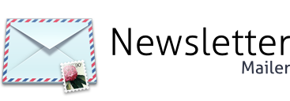
Created: 02.01.2010
By: YNH
Thank you for purchasing my application. If you have any questions that are beyond the scope of this help file, please feel free to email via my user page contact form here. Thanks so much!
Table of Contents
- Installation
- Mailserver Configuration
- Manage Subscribers
- Import Subscribers from DB
- Subscription Form
- Create a Newsletter
- Newsletter Statistics
- Create a Campaign
- The Template Concept
- Create a Template
- Setup Cronjobs
- Sources and Credits
A) Installation - top
System Requirements
In order to run the Newsletter Mail you need a web server with these specifications:- PHP 5.2 or higher, with the SPL extension (standard)
- Limited network access to connect to remote SMTP servers
- 8 MB or more memory limit (Swift Mailer uses around 2 MB)
Quick Installation
- Create a mysql database for the "Newsletter Mailer" on your web server, as well as a MySQL user who has all privileges for accessing and modifying it.
- Place the Newsletter Mailer files in the desired location on your web server.
- Make the tmp and conf folder writeable.
- Visit the Newsletter Mailer in your Browser.
Configuration
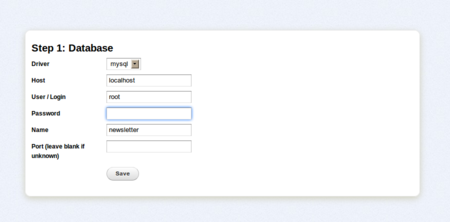Step 1
Enter the connection information to the database, you created for the "Newsletter Mailer".
The application currently only support MySql database servers.On most webservers the database host is localhost.
Then enter the user and password of the MySql user and the database name.
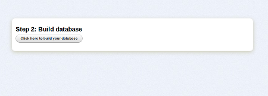
Step 2
Simply press the "Click here to build your database", wait a moment and your done!
The user and password to the "Newsletter Mailer" is:
Username: admin
Password: password
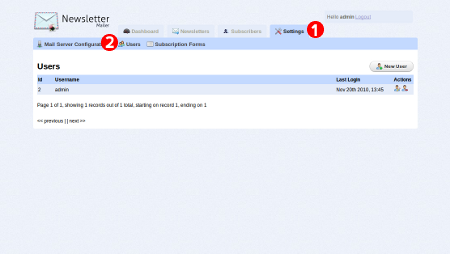
Change password
It is highly recomanded to change your password after the installation of the "Newsletter Mailer".
Click on the Settings tab and then on the submenu 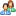Users.
Now you will see a list with all the users. In order change the password press on the edit user icon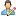 on the right side of the admin row.
Tip: If you wait for a moment over an icon speech bubble tip will appear.
B) Mailserver Configuration - top
The "Newsletter Mailer" provides multiple mail delivery techniques. You can deliver mails using a SMTP Server, the native php mail() function, Sendmail or Amazon Simple Email Service. Like in any mail client you need to configure the connection to the mail server.
Mail Server Configuration
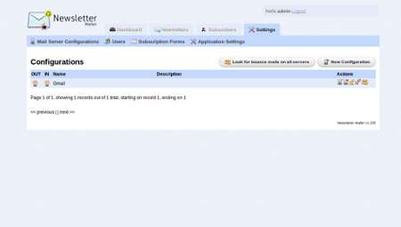Click on the Settings tab and then on the submenu 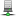Mail Server Configurations.
To create a new mail server connection press on the
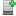New Configuration button.
Enter a name for this cofiguration and a short description of the cofiguration. Enter the email adresse the newsletter will be sent from in to the From field. If you want receive the replies on an other email adresse, enter the adresse in to the Reply To field. If you want you name to appear in the mail client and not only the email addres you can use the following pattern:Display Name <email@domain.com>
SMTP Configuration
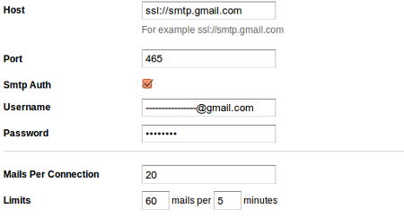The connection to the outgoing server(SMTP) supports authentication and encryption.
Enter the server adresse in to the Host field. This addresse mostly starts with "smtp.". If your server uses any encrpytion add the prefix "ssl://" for SSL encryption or "tls://" for TLS encryption befor the server adresse.
SMTP servers often require users to authenticate with a username and password. If your server needs to authenticate check the Smtp Auth chekbox and enter the username and password.
Most SMTP server have limited the number of mails which can be sent during on connection. You can define the number of mails sent per connection using the "Mails Per Connection" setting. Most providers also have also a mailing limit. You can define how may mails are sent during a specific time span.
Amazon Simple Email Service (Amazon SES)
Amazon Simple Email Service (Amazon SES) is a highly scalable and cost-effective bulk and transactional email-sending service for businesses. Configuring the Amazone SES delivery is extreamly simple just enter the "Aws Access Key" and the "Aws Secret Key". Please do not for get to set your Amazone SES in production mode in the sandbox mode you can only send mails to your self.
Inbox Configuration
If you send newsletters over a longer time span, you will notice the by the time more and more mails will be invalide. You may have noticed that if you send a mail to an inexistant email address, you will recive a answer mail from the mail delivery system. The "Newsletter Mailer" is able to detect this answers form the mail delivery system and assign it to a newsletter and a subscriber. This way you can see how many newsletter where really sent.
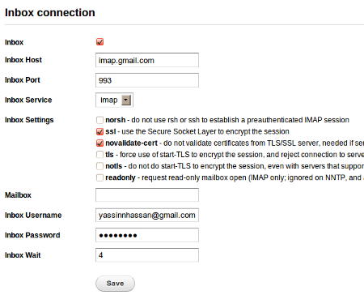If you want the "Newsletter Mailer" to access your mailbox you must check the inbox checkbox.
Enter the incoming server address in to the Inbox Host field. The incomming server can either be a POP or an IMAP server. Choose the server type in the Inbox Service field.
You can select some paraments for the connection.
You also can chose which remote mailbox will be access.You also can define how many minutes the Newsletter Mailer must wait after each connection, using the Inbox Wait field.
Test Connection
After saveng the connection settings you can test the settings by pressing the Test Settings button in the Mail Server Configurations list.
C) Manage Subscribers - top
Every subscriber can subscribe multiple categories. A newsletter either be sent to one category or multiple categories at once.
Manage Categories
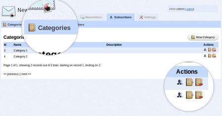You can manage the subscriber categories by clicking on the Subscribers tab and then on the submenu
Categories.
You can add a new Category by clicking on the 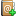New Category button.
To view, edit or delete the exisiting press on the icons in the Action column.
View Subscribers
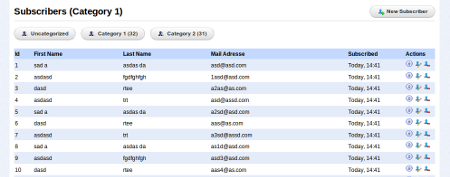You can manage the subscriber categories by clicking on the Subscribers tab and then on the submenu
Subscribers.
You can list all the subscribers in each category, add a new subscriber or view get more informations about a subscriber (which newletter he have read and when he read them).
Import Subscribers from CSV
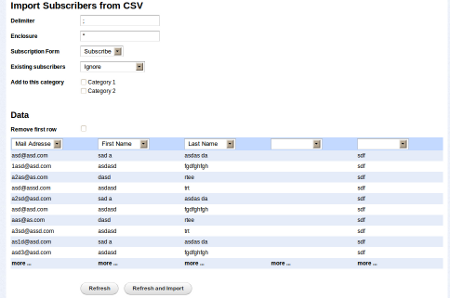Many CRMs(Customer relationship management) allows the user to export his clients as a CSV-File(Comma-separated values). You can also save an Excel in the CSV format.
To import subscribers form a CSV file click on the
Subscribers tab and then on the submenu
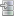Import Subscribers.
D) Import subscription from DB - top
This function is very usefull if you want to send newsletters to all you customers. This function allows you to connect directly to the other database and import records from the other DB.
Setup Import Task
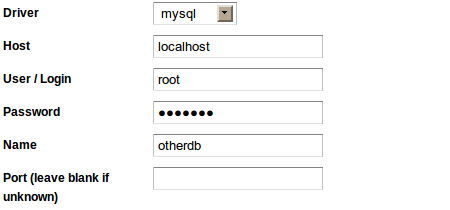You can connect to any database mysql, even if the DB is on an other server.
Enter connection information to the other database.
After successfully connecting enter your mysql query.
For example: SELECT * FROM `user`
After entering the query you will see the 10 first results of the query. The last step is to define the target column. And to whiche categories the subscribers will be added.
In order to run the import task press on the  Run All Tasks button
Run All Tasks button
E) Subscription Form - top
The "Newsletter Mailer" enables you also to create your own custom subscription forms. The subscription form is fully customizable (introduction text, field names, validation errors). Each form also contains a unsubscribe message which will be showen to the users who subscribe through this form after unsubscription.
Create a subscription form
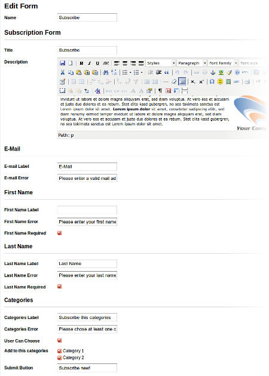Click on the Settings tab and then on the submenu 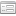Subscription Forms.
You can create a new Form by clicking on the New Form button or edit the existing form by clicking on the 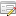Edit Form icon.
You can define the title an the discription text of the subscription form. You can format and add pictures to your description text using the HTML editor.
In order to allow the user to create the subscription form in their language. The user can customize the field labels and the validation errors.
If you want to hidde a filed in the form leave the label text of the field empty.
You also can choose if the field is requried by checking the required checkbox.
An other thing you can edit is which categories the subscriber will be added to or can choose from. If the field "User Can Choose" is checked the subscriber can select the categories he subscribes on his own.
The Newsletter Mailer will create two versions of this form a standalon form version and a iframe for a seamless integration into your website version.
Standalone Form
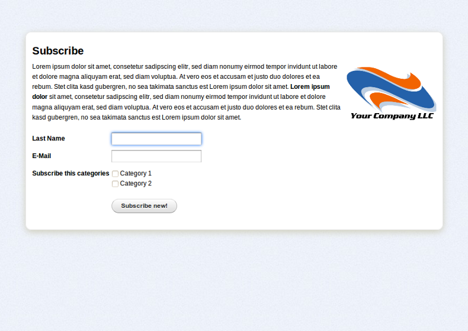F) Create a Newsletter - top
In order to view, edit or create a newsletter you on the Newsletter tab and then on the submenu Newsletters. Press on the Create new newsletter button to create a new newsletter. The newsletter creation processe is divided into five steps.
Step 1
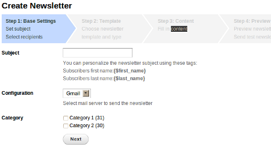In the first step you must enter the newletter subject, this will be also the title of the mail the users will recive.
You can personalize the newletter subject by adding the subscribers first name using this tag {$first_name} or last name {$last_name}.
You must also choose which mail server this newletter will be sent through by selecting a configuration.
Last but not least you must choose to which categories the newsletter will be sent.
Step 2
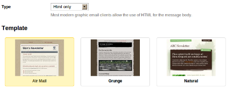You can choose in which format your newsletter will be sent HTML, plain text or in both formats. Most modern e-mail clients support HTML mails.
The second thing the user must choose is the template for the newsletter. The template defines the design of the newsletter.
Step 3
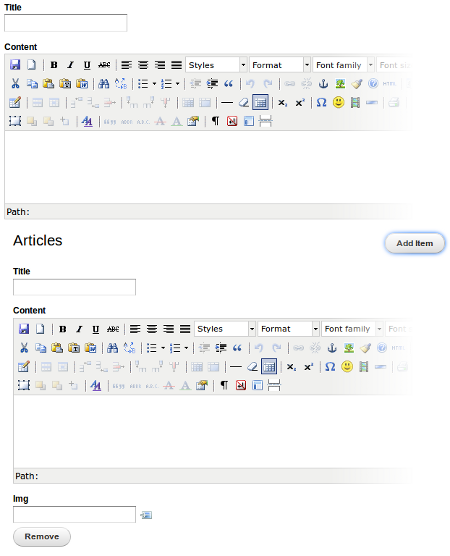In this step the user can fill in the content of the newsletter. Depending on the template there will be different field to fill in.
There are three types of fields:
Text:
This plain text field
HTML:
This field is a wysiwyg html editor which allows the user to creat a formated content containing images.
Image chooser:
This field allows the user to choose a image. If the user clicks on the  image library button, he will get a list of the images on the server. He can also upload a new image to the image library.
image library button, he will get a list of the images on the server. He can also upload a new image to the image library.
The field list also contains repeating blocks whuich can be used for listings. In the example on the left, there is a article list. The user can add new item to the list by clicking on the "Add Item" button, he also can remove an item by clicking on the remove button.
Step 4
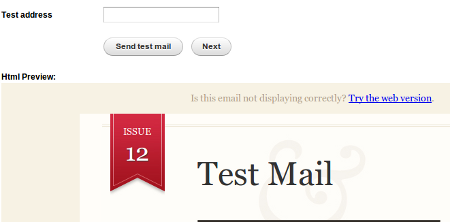After choosing the template and filling in the content. Step four will show you a preview of your newletter. You can also send a test mail of your newsletter to any addresse.
See Full Preview
{kind=link}
See Content Fields
{kind=link}
Step 5
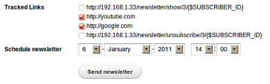After checking if the newsletter is OK. The user can choose which links in the newsletter will be tracked. You will be able to see how many subscribers clicked on a tracked link.
You can send the newsletter now or schedule it to a future date.
G) Newsletter Statistics - top
After sending a newsletter you may be interested how many subscribers opened the newsletter and whiche links where clicked. To view the statistics of a newsletter press on the Newsletter tab and then on the submenu Newsletters. Then click on the  info icon.
info icon.
You can see how many mails where sent, how many where read and how many failed. You also can see how many unsubscribed the newsletter after reading this newsletter. You can also see how many clicked on each tracked link. This statistic can also be viewed as an overlay on the newsletter preview.
An other nice feature is the Timeline. This graph show you when the newsletters where sent and when the newsletter where read.
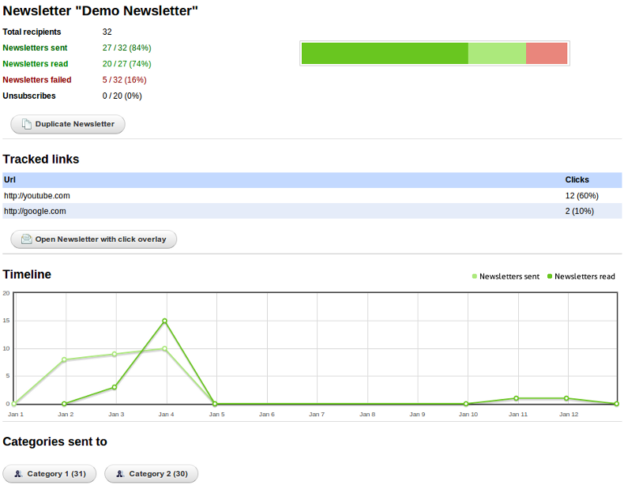H) Create a Campaign - top
The campaign function allows you to schedule a series of newsletters. You can also define a start and the end of a campaign. In order to view, edit or create a campaigns you on the Newsletter tab and then on the submenu Campaigns.
Create a Campaign
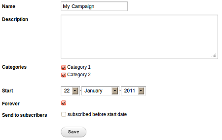Create a new campaign by clicking on the New Campaign.
First you give your campaign a name. Then you need to choose which categories take part in this category.
You need also to define the start of the campaign (Please do not choose a start date in the past). If you want to define an end date please uncheck the forever checkbox.
If you check the "Send to subscribers subscribed before start date" checkbox. The subscribers subscribed before the start date will recive the newsletter starting form the start date.
I) The Template Concept - top
The Newsletter Mailer seperates content and design. This concept have many advantages. You create a series of newsletters with the same consistent look. You can try different designs without need to tippe in the content again and again.
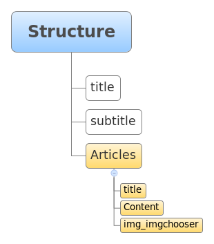Each template contains informations about the data structure. This structure is defined using a html like markup language. The fields can be grouped in repeating blocks using HTML like tags <groupname> </groupname>
title subtitle <articles> title Content img_imgchooser </articles>
Field types:
-Textfield: Field name starts lower case
-Image chooser: Field name starts lower case and ends with "_imgchooser"
-Html editor: Field name starts upper case
J) Create a Template - top
You can create your own newletter design using a html editor like Dreamweaver or buy a nice email template ThemeForest.net.
Create a new template
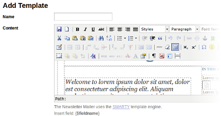In order to view, edit or create a newsletter you on the Newsletter tab and then on the submenu
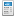Template.
In order to transfere the HTML code from your HTML editor to the newsletter mailer. Copy your the from your editor or html file an paste it in to the 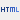HTML view.
You can also add a preview image of template.
The first part of the template creation is now done.
Upload a missing images
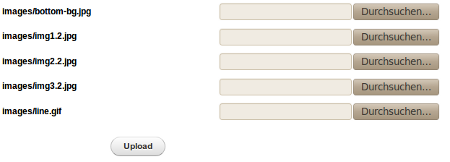To upload the missing images click on the 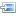Upload a missing images button.
The Newsletter Mailer detects the missing images and listes the missing images. Each missing image can be replaced using an file chooser.
After uploading all the missing image you can check the template by pressing on the preview button.
Enter SMARTY code
Now we must define how the data will be inserted in to the template. This part is the hardest part in the template creation processe.
Replace the texts in the places where you want to insert your data with this tag {$fieldname}. You can also use different modifiers like the default modifier. {$fieldname|default:'no title'} This modifier will print out "no title" if the field is empty. Please click here for more informations about modifieres.
Repeating Blocks
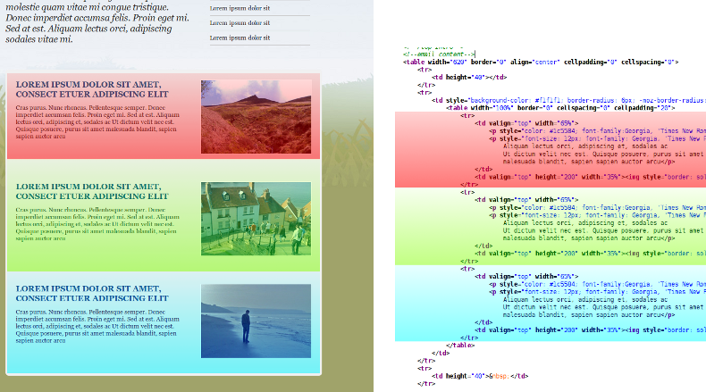After replacing the simple texts, we need to insert the article list. First we search the repeating article block in the source code. After finding the blocks add this line before block <!---foreach name=art item=article from=$articles--->
and add this line after the block <!---foreach--->.
This code means that the block will be repeated for each article in the list articles the sub fields will be stored in the variable article. Within this repeating block you can print the article title using this code:{$article.title}
The Newsletter Mailer contains an automatic image resizer. Replace the image with this code [image src={$fieldname} w=width h=height border=border bcolor=bordercolor ].
K) Setup Cronjobs - top
If you want the newsletter mailer to work(newsletter sending,bounc mail detection) automatically you will need to configure two cron jobs. The setup processe of a cronjob depends on the hosting software you are using (Plesk, cPanel). The commands are an the  Dashboard of the newsletter mailer.
Dashboard of the newsletter mailer.
L) Sources and Credits - top
I've used the following images, icons or other files as listed.
- Fugue Icons by Yusuke Kamiyamane
- Sample templates from CampaignMonitor
- Smarty Template Engine
- Swift Mailer
- TinyMCE HTML editor
- CakePHP
Once again, thank you so much for purchasing this application. As I said at the beginning, I'd be glad to help you if you have any questions relating to this application. No guarantees, but I'll do my best to assist. If you have a more general question relating to the application on CodeCanyon, you might consider visiting the forums and asking your question in the "Item Discussion" section.
YNH